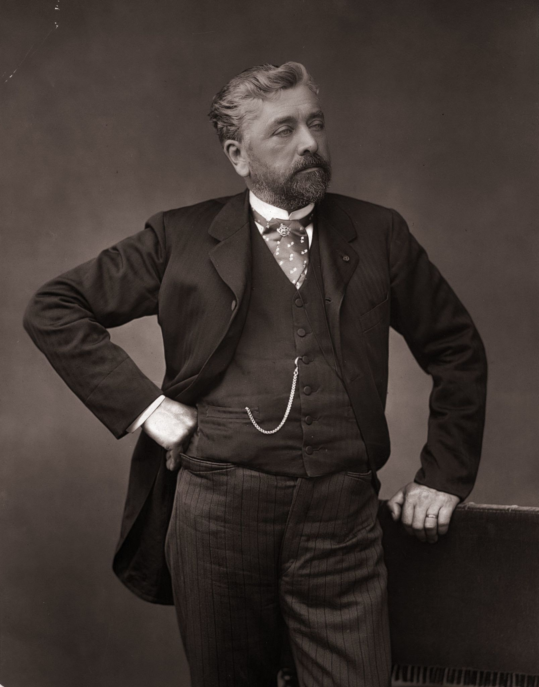

|  | Gustave Eiffel : a passionate engineer" The Tower is not Gustave Eiffel’s only creation. This enthusiast and true genius was able to go beyond his own limits to bequeath to us monuments such as the dome on the Nice Observatory, the metallic structure of the Statue of Liberty, not to mention the Bordeaux railway bridge " • An engineer by training, Eiffel founded and developed a company specializing in metal structural work, whose crowning achievement was the Eiffel Tower. He devoted the last thirty years of his life to his experimental research. • Born in Dijon in 1832, he graduated from the Ecole Centrale des Arts et Manufactures in 1855, the same year that Paris hosted the first World's Fair. |
| Gustave Eiffel |
• His outstanding career as a constructor was marked by work on the Porto viaduct over the river Douro in 1876, the Garabit viaduct in 1884, Pest railway station in Hungary, the dome of the Nice observatory, and the ingenious structure of the Statue of Liberty. It culminated in 1889 with the Eiffel Tower. This date marks the end of his career as an entrepreneur.